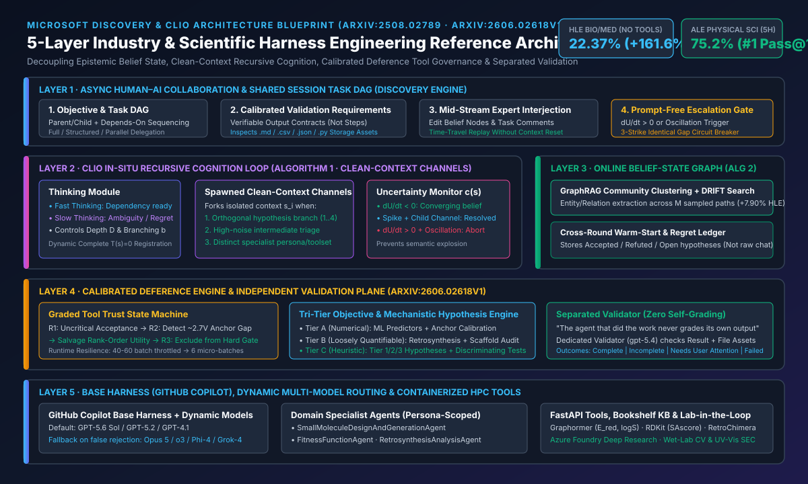
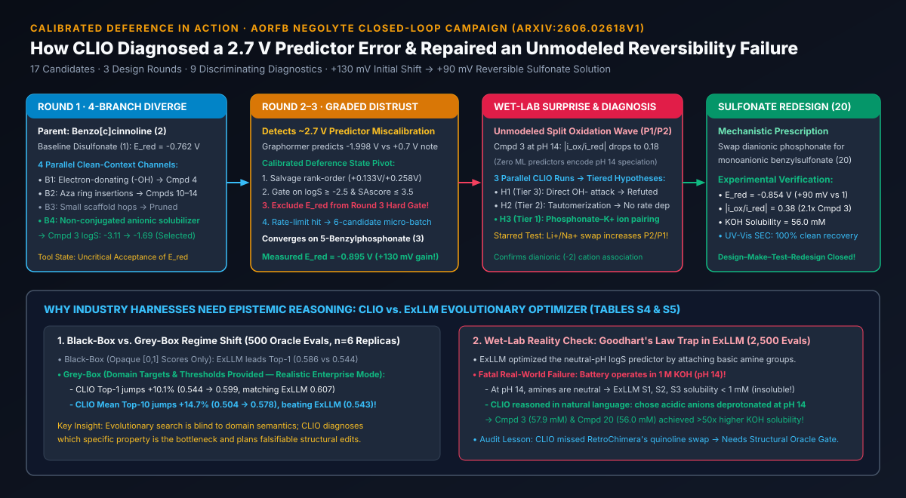
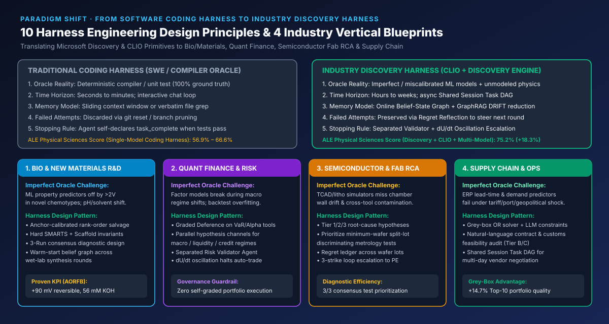
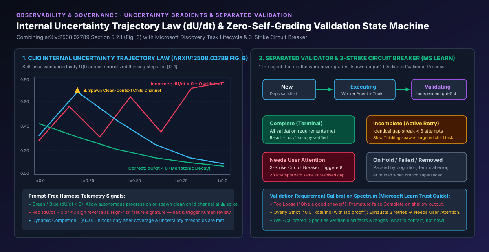

交互式校准遵从（Calibrated Deference）与多目标门控仿真
复现 arXiv:2606.02618v1 方程 S1–S5 与 Round 1→Round 3 的工具信任状态机。调节锚点误差、分子性质与母核校验开关，观察 Harness 决策变化。
Harness 决策输出与方程 S1–S5 评分拆解
对比：静态盲信流水线 vs. CLIO 校准遵从 Harness
| 评估维度 | 静态盲信流水线 (Static Pipeline) | CLIO 校准遵从 + 结构门控 |
|---|
AORFB 真实湿实验演进对照表 (arXiv:2606.02618v1 Table 1 & S5)
| 分子 | E_red 预测 / 实测 | 1 M KOH 溶解度 | |i_ox/i_red| 可逆性 | 关键机理状态 |
|---|---|---|---|---|
| Cmpd 1 (基线) | -1.60 V / -0.762 V | 500.0 mM | 0.52 (单波) | 文献双磺酸对照基准 |
| Cmpd 3 (膦酸盐) | -2.04 V / -0.895 V (+133 mV) | 57.9 mM | 0.18 (P1/P2 双峰) | pH 14 下 -PO3^2- 与 K+ 紧密离子对分裂 |
| Cmpd 20 (磺酸盐) | -1.92 V / -0.854 V (+92 mV) | 56.0 mM | 0.38 (单峰翻倍修复) | 弱配位单阴离子 -SO3^- 消除阳离子分裂 |
| ExLLM S1–S3 | 黑盒高分 / 无法测定 | < 1.0 mM (沉淀) | 不溶失效 | 碱性胺基钻 pH 7 预测器空子，在 pH 14 去质子化 |
内部不确定性梯度定律 (dU/dt) 实时诊断器
基于 arXiv:2508.02789 Section 5.2.1 (Fig. 6)：选择不同的认知不确定性轨迹，观察 Harness 如何通过斜率与符号反转次数（Ω）进行免提示词（Prompt-Free）干预。
Microsoft Discovery 独立验证与 3 振熔断状态机
基于 Microsoft Learn 官方文档：“The agent that did the work never grades its own output.” 模拟连续重试时的验证缺口指纹追踪。
行业场景 Harness Engineering 十大核心设计要点（10 Core Design Principles）
| # | 设计要点名称 | 文献来源与算法锚点 | 行业场景架构落地指南 |
|---|---|---|---|
| 01 | 校准遵从状态机 (Calibrated Deference) |
arXiv:2606.02618v1 Sec 3.2 & Fig. S1 (~2.7 V E_red 偏移) |
每次调用行业预测器时混入已知参考锚点；若绝对标度失准但局部秩相关有效，将其移出硬门控并降级为软排序特征。 |
| 02 | 三层异构目标编排 (Tri-Tier Objectives) |
arXiv:2606.02618v1 Sec 2.1 & Table S5 (ExLLM pH 14 沉淀) |
解耦数值预测（Tier A）、带确定性结构校验的流程步数（Tier B）与自然语言物理/合规极端工况推演（Tier C），粉碎 Goodhart 刷分陷阱。 |
| 03 | 干净上下文递归分支 (Clean-Context Channels) |
arXiv:2508.02789 Alg 1 (+5.92% HLE) & 动态 T(s)=0 |
在正交假设、高噪声中间排障或切换专业 Persona 时派生干净上下文子通道；在覆盖率达标前隐藏 Completion 终止函数。 |
| 04 | 在线持久化信念状态图 (Warm-Start Belief Graph) |
arXiv:2508.02789 Alg 2 (+7.90%) & 2606.02618v1 Sec 4.1 |
跨轮次维护 Accepted / Refuted / Open 假设图谱，用 GraphRAG + DRIFT 社区聚类提纯，新轮次仅以主题抽象热启动。 |
| 05 | 不确定性梯度实时熔断 (dU/dt Telemetry) |
arXiv:2508.02789 Sec 5.2.1 & Fig. 6 |
实时计算自评不确定性斜率 dU/dt 与符号反转次数；尖峰时派生子通道（▲），高频震荡时免提示词自动冻结并升级人工。 |
| 06 | 执行与验证彻底分离 (Separated Validator) |
Microsoft Learn concept-tasks-investigations |
坚守“执行 Agent 绝不自我打分”铁律；由独立模型部署（如 gpt-5.4）直接读取存储层 .csv/.json/.py 核验结果。 |
| 07 | 连续 3 次相同缺陷熔断 (3-Strike Circuit Breaker) |
Microsoft Learn concept-trust-basic-investigation-patterns |
对比历次验证未通过的规范化缺陷指纹；一旦连续 ≥3 次残留相同缺口，立即停止重试并转入 Needs User Attention。 |
| 08 | 后悔反思与多模型路由 (Regret + Multi-Model) |
MS TechCommunity ALE Blog (物理科学 75.2%, +18.3%) | 基于 GitHub Copilot 基础 Harness，将失败尝试沉淀为反事实约束（Regret Reflection），遇伪拒绝或停滞时动态切换模型池。 |
| 09 | 运行时微批次优雅降级 (Micro-Batch Resilience) |
arXiv:2606.02618v1 Sec 3.2 (40–60 → 6 微批次) |
向认知层暴露 API 限流与服务健康信号，支持自主缩小批处理粒度（6 分子微批次）或启用替代启发式规则。 |
| 10 | 共识机理与最小判别实验 (Consensus Diagnostics) |
arXiv:2606.02618v1 Table 2 & S2 (9 项实验 → Cmpd 20) |
针对未建模物理/生产回归，启动多路并行 CLIO 运行生成 Tier 1–3 假设，优先执行全票标星（★）的正交证伪实验后再重设计。 |
1. Microsoft Discovery & CLIO 五层行业 Harness 参考架构

2. 校准遵从（Calibrated Deference）与 AORFB 分子设计闭环全景

3. 行业 Harness 十大设计原则与四大垂直行业映射矩阵

4. 内部不确定性梯度定律 (dU/dt) 与独立验证三振熔断状态机
